PROFILE
田浦 夏乃（たうら なつの）
1998年7月9日生まれ。長崎県長崎市出身。
学生時代は建築について学び、建築構造デザインの研究に取り組む。
2021年4月、新卒で建築CADを取り扱う会社に入社。
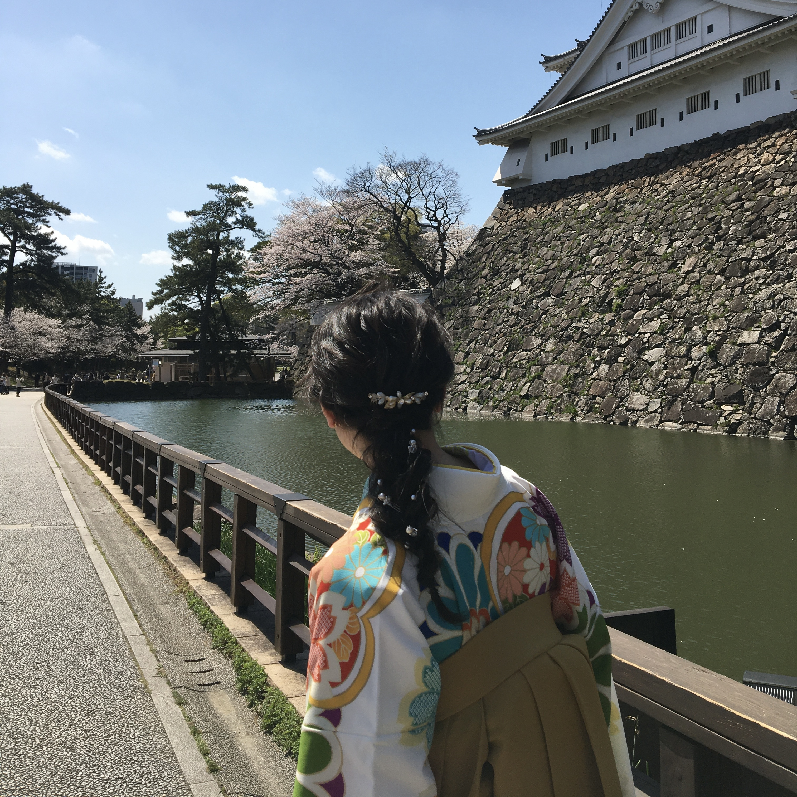
STUDY
大学のゼミで構造デザインという分野を学び、
卒業研究では、竹集成材を用いた大型の本棚構造体をデザインし、構造解析も行いました。
AutoCADを使って3Dモデルを作成し、構造解析ソフトを使って力学特性を調査しました。
また、Photoshopを使って画像の加工を行いました。
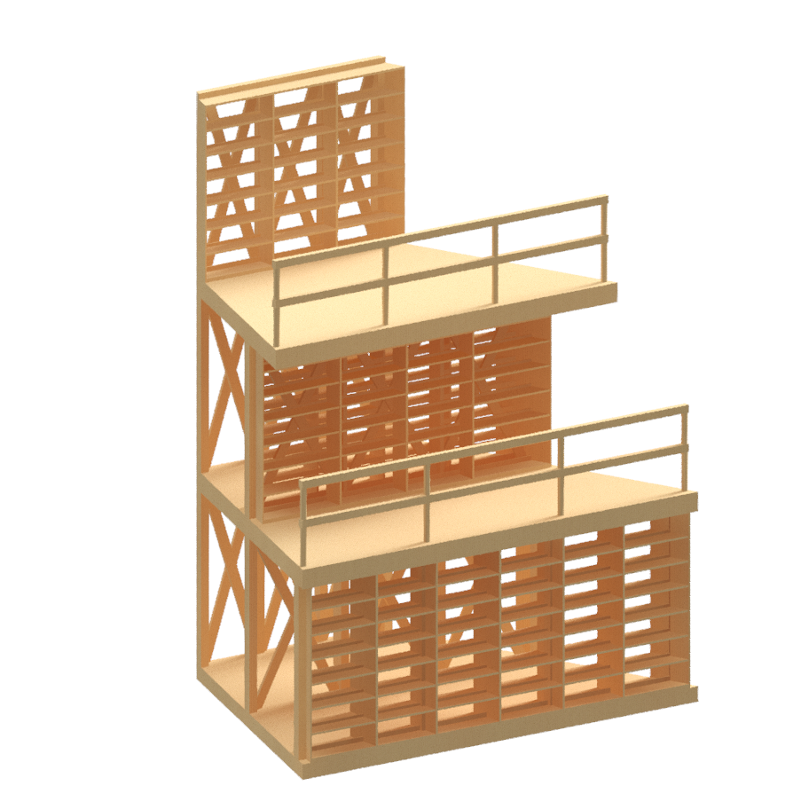 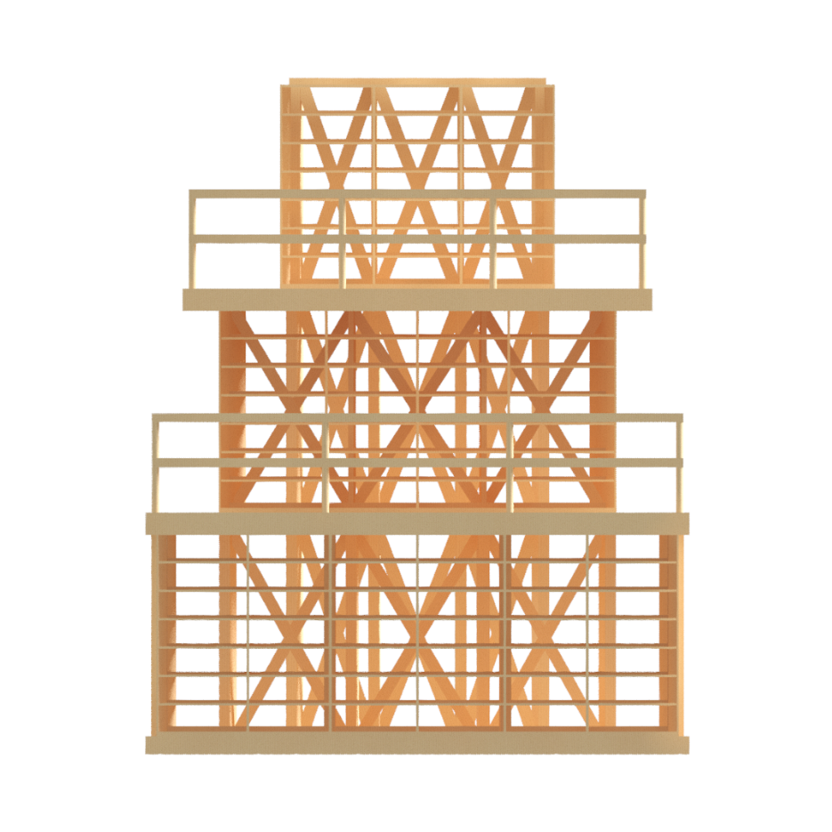 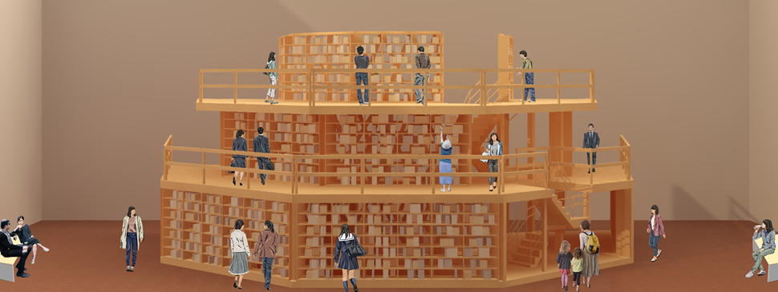 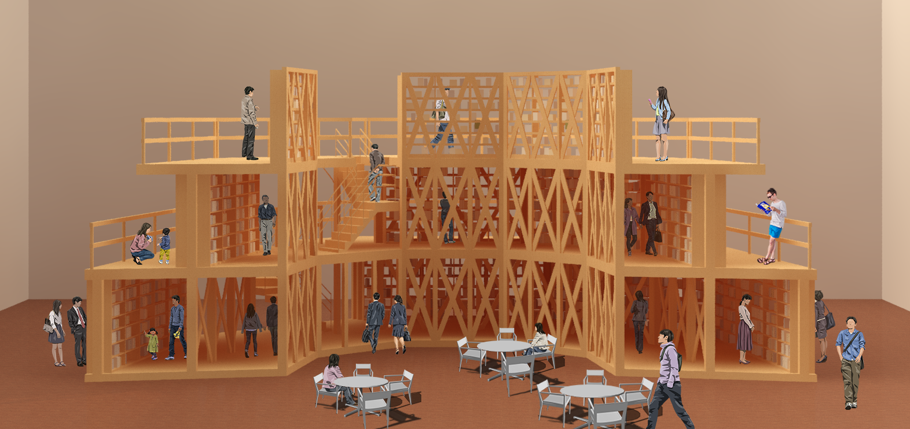 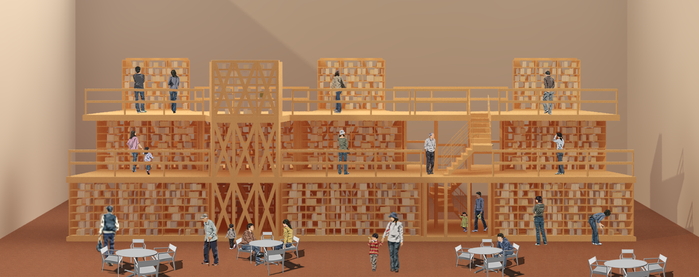 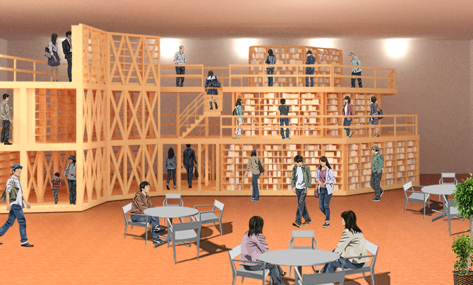HOBBY
美味しいものを食べること
休日には友人や恋人と美味しいものを食べに出かけます。
特にスパイスカレーと豚骨ラーメンには目がありません！
福岡には美味しいものが多いので、気になるお店がまだまだあります☺
音楽
大学時代に軽音サークル入ったことをきかっけに、バンド音楽が好きになりました。
大学時代にはオリジナルバンドを組んで月に1、2回ほどライブを行っていました。
音楽を通して、世代や地域を超えて様々な人と関われることに面白みを感じます。
（オリジナルバンドで行った活動についてはWORKSにまとめています！）
WORKS
音楽活動を通して、楽曲制作・イベントフライヤーの作成・CDの作成など、
”作る”ことに幅広く触れてきました。
ここでは、そのことについてお話させていただきます☺
大学時代の制作で、もっとも印象に残っているのはCDの制作です。
レコーディングから、編曲、CDジャケット等の作成、プロモーション動画の作成まで
周囲の人たちの協力も得ながらほとんど自分たちで行いました。
時間と手間をかけて、音源が完成し、CDが出来上がったときは、とても感動しました！
そして、何よりメンバーと意見交換しながら作っていく過程がとても楽しいと感じたのを覚えています。
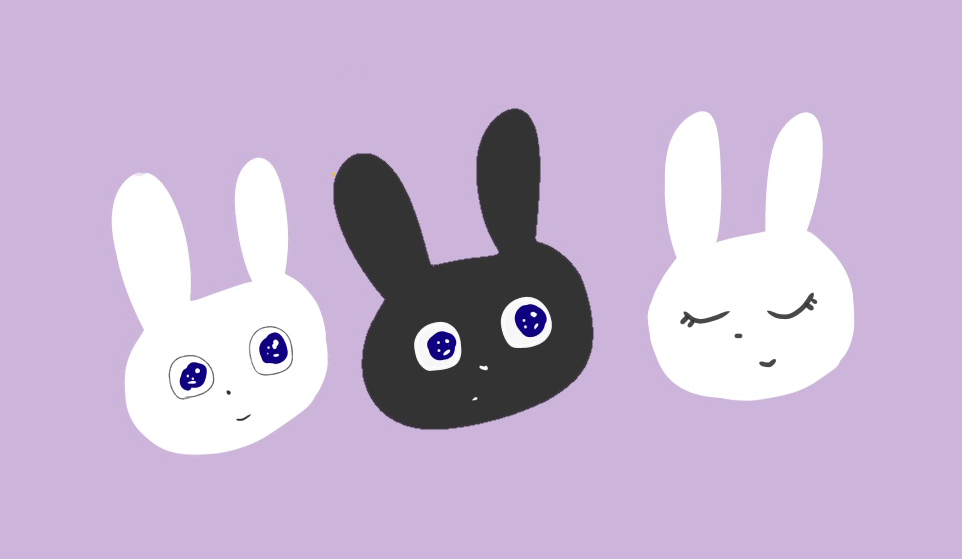
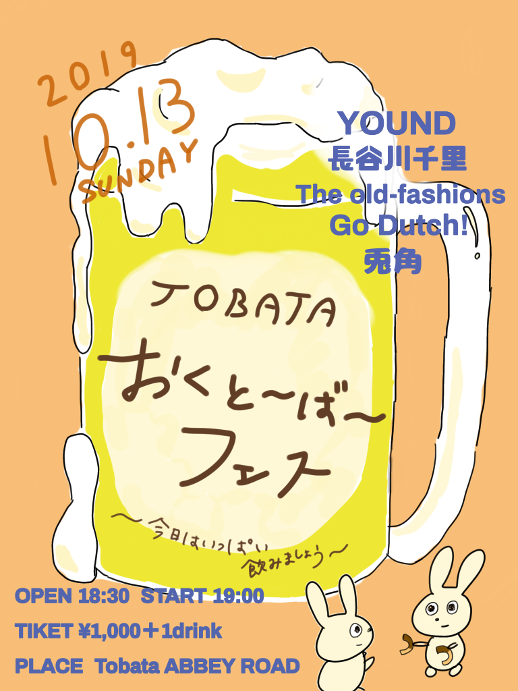
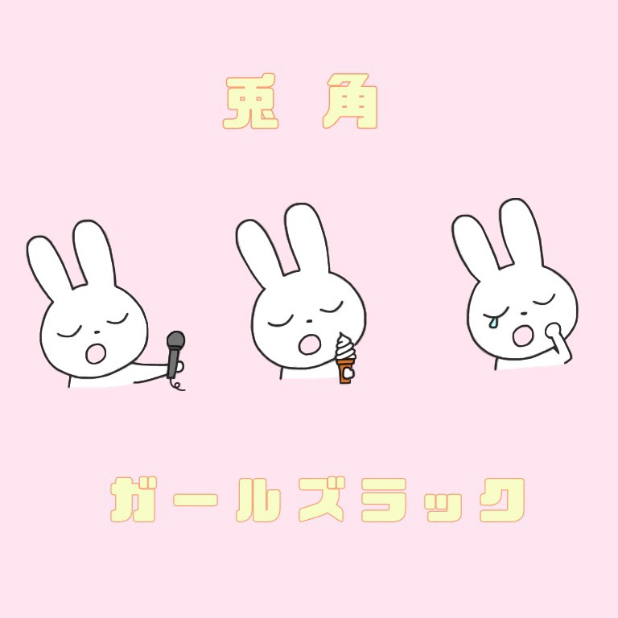
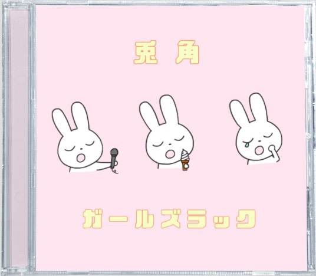
 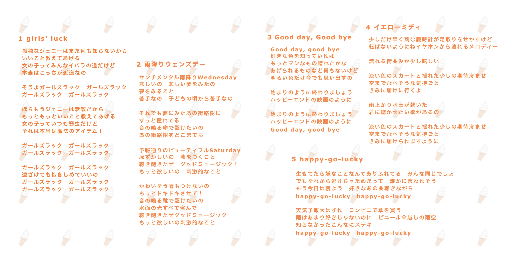
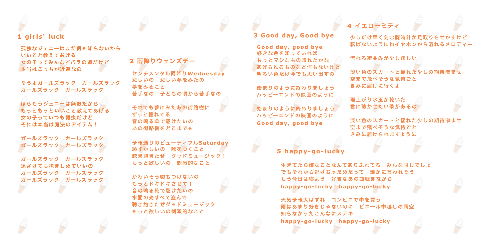
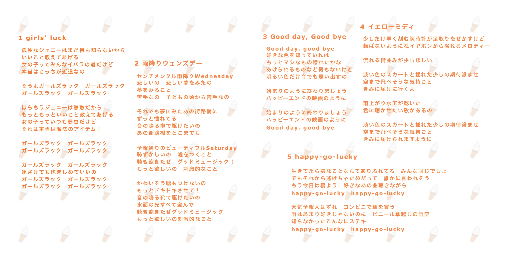